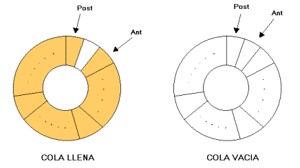

Las colas simples y circulares son dos variantes de la estructura de datos de cola común. Ambas tienen su propia utilidad y ventajas dependiendo de los requisitos del problema que se esté abordando.
Colas Simples
- En una cola simple, los elementos se agregan al final (cola) y se eliminan del frente (frente) de la cola.
- Es una estructura de datos lineal, donde los elementos se colocan uno detrás del otro y se eliminan en el mismo orden en el que se agregaron.
- La cola simple sigue el principio FIFO (First In, First Out), lo que significa que el primer elemento que se agrega a la cola es el primero en ser eliminado.
- La cola simple se puede implementar fácilmente utilizando una lista, una matriz o una lista enlazada.

A continuacion un ejemplo de como el codigo funciona: Codigo
Colas Circulares
- En una cola circular, los elementos se almacenan en un arreglo circular.
- Después de que el último elemento, la cola comienza de nuevo desde el principio.
- Esto ahorra espacio en comparación con la cola simple, ya que los elementos se pueden insertar y eliminar en cualquier posición del arreglo sin necesidad de mover todos los elementos restantes.
- La cola circular es útil cuando el tamaño de la cola es fijo y se necesita un acceso rápido tanto al frente como a la cola de la cola.

A continuacion un ejemplo de como el codigo funciona: Codigo